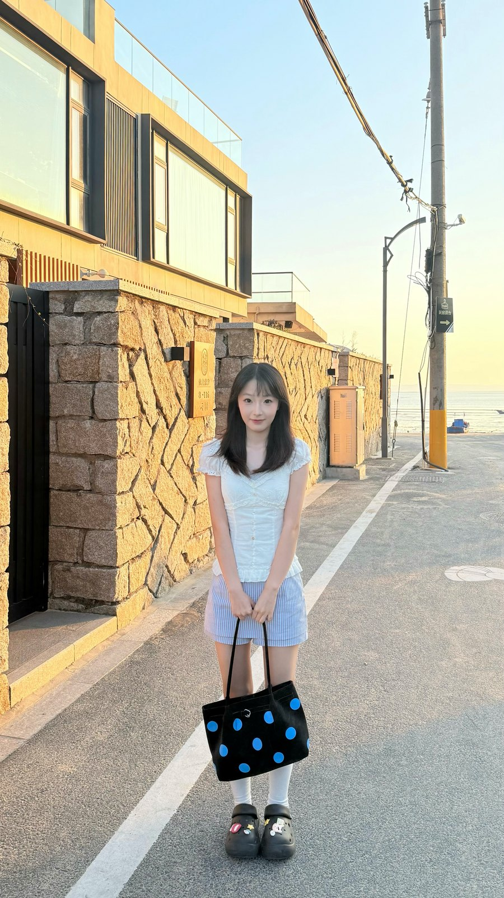

2026.03 — 2026.09
时代文旅（广州）
策划 & IP 运营实习生
运营创始人 IP「熊晓杰说文旅」多平台内容与数据复盘；参与 5 个独立撰写、6 个合作完成的大型文旅与品牌全案；深度参与第三届中国主题公园战略营销峰会。

我关心的是：一个好的想法，怎样才能真的被看见、被理解、被行动。
我目前在暨南大学读数字营销传播硕士，本科就读于长江大学网络与新媒体专业。新闻与传播的训练让我习惯先问「对谁说、说什么」，再考虑「怎么拍、怎么发」。
2026 年 3 月到 9 月，我在时代文旅做策划与 IP 运营实习：参与 11 个文旅与品牌全案，运营创始人 IP 的多平台内容，也参与了 300+ 人行业峰会的嘉宾对接与现场执行。再往前，我在湖北文旅荆州集团做过策划实习，也做过两年兼职摄影师，完成百余场活动的拍摄与后期。
我能写方案，也能拍能剪；能拆数据，也能在现场把流程接住。这些经历让我更适合做「从策略到落地」之间那个人。
新闻传播与数字营销的双重训练，既提供内容敏感度，也提供分析与策略框架。
主修课程：数字营销传播理论与实务、消费者行为研究、创意策划与写作、新闻发言人实务、专业新闻写作、全媒体制播、Python 程序设计。
从内容生产到策略复盘，从一个人写稿到几百人的现场。
策划 & IP 运营实习生
运营创始人 IP「熊晓杰说文旅」多平台内容与数据复盘；参与 5 个独立撰写、6 个合作完成的大型文旅与品牌全案；深度参与第三届中国主题公园战略营销峰会。
策划实习生
主导「江汉旅游年卡开学季」全案宣发，负责媒体投放对接与宣传视频拍摄剪辑；参与文创店展陈与端午活动策划。
兼职摄影师 & 视频制作
独立及协作完成百余场婚礼与品牌活动拍摄、后期剪辑，负责现场调度与多方沟通。
长期的组织、沟通与项目统筹训练，让我习惯在多人协作中把事情推进下去。
班长兼团支书
项目化统筹 70+ 场班级及党团主题活动，负责全流程策划、文案与宣发；搭建 50+ 班级成员信息档案，沉淀 50+ 份规范化复盘文档。
组织部干事
参与迎新、运动会及楚文化传播等校园品牌活动的策划与执行；负责入团入党流程答疑、材料归档与“智慧团建”系统维护。
按项目名称、年份与具体奖项准确呈现，不再合并笼统的获奖等级。
我是个很容易被现场点燃的人。会为了喜欢的舞台跑去线下，也会和同好拼车、买周边、打包发货；忙完再钻进厨房，给自己做一顿热乎的饭。热闹我要，日子也要有滋有味。
翻开我的生活切片 ↗